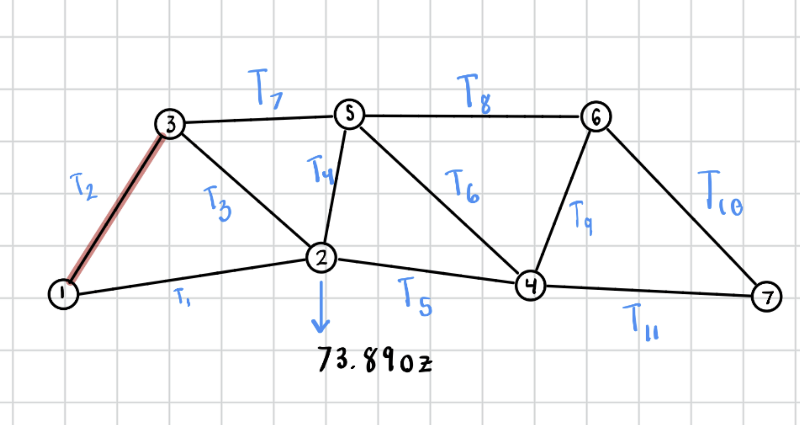
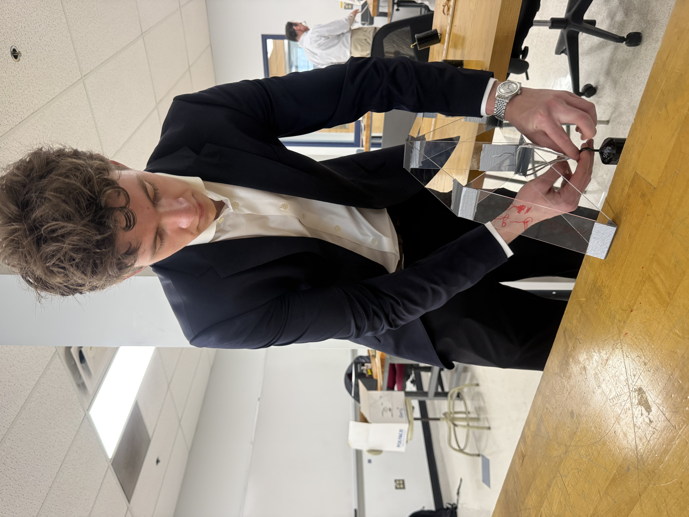

← Back to projects
Structural Mechanics · Testing
Acrylic Truss Design & Analysis
Tested acrylic member buckling and designed a planar truss under geometric and material constraints to improve load-bearing performance.
Project cover photo
Replace this block with your own photo or CAD rendering.
Project overview
This project explored how truss geometry and member buckling affect structural performance.
Design & development
Highlights of the design and build process:
- Investigated buckling behavior of acrylic members.
- Designed and evaluated a planar truss under specified constraints.
- Used MATLAB analysis to support design decisions.
Photo gallery


Testing & results
Add your actual measurements, testing observations, outcomes, and lessons learned. This section is intentionally left open rather than inventing results.